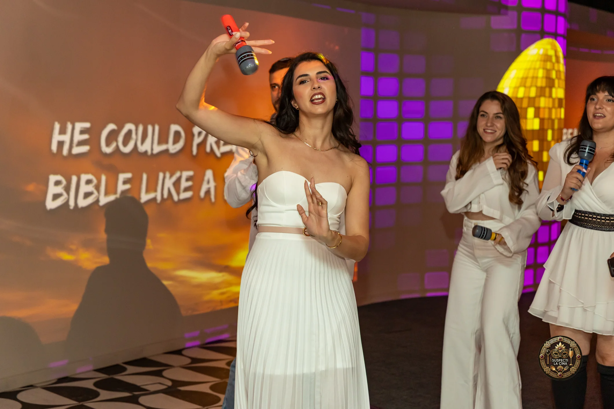
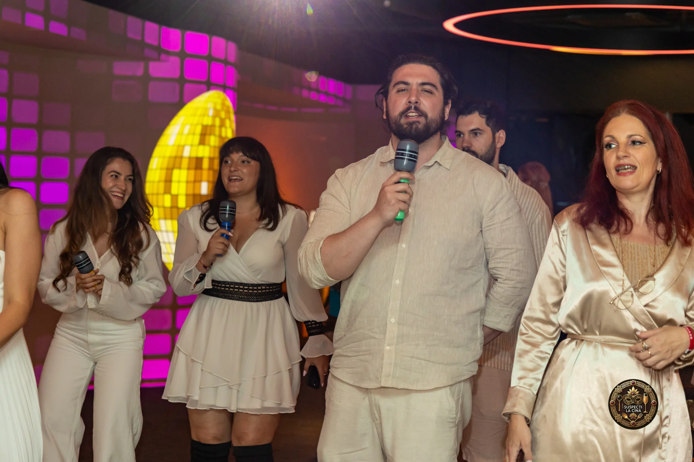
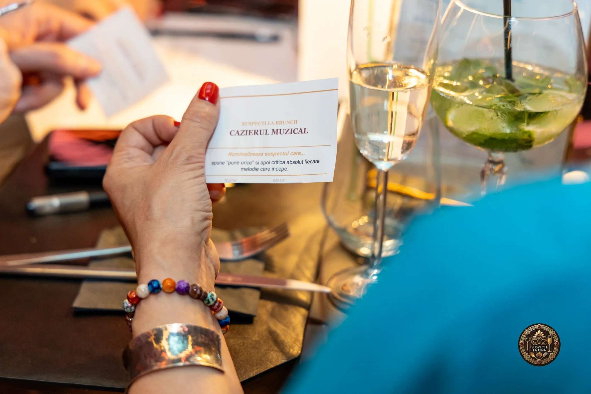
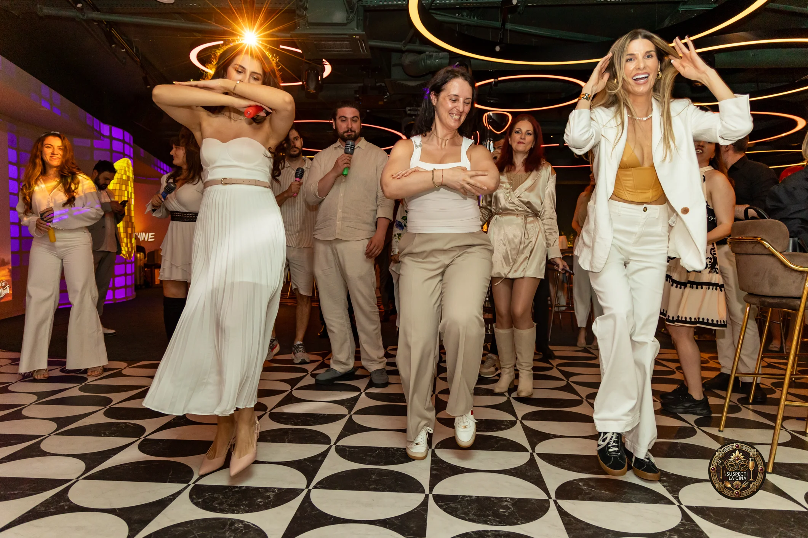
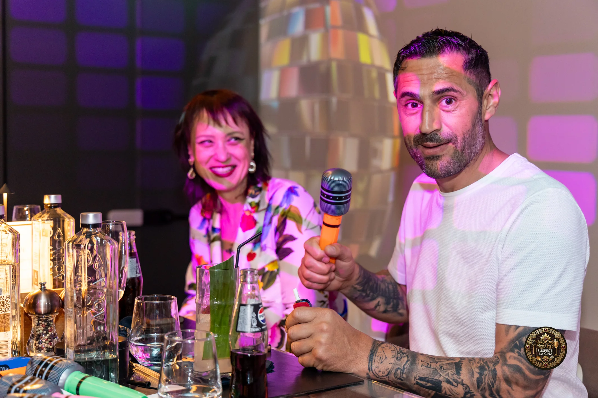

01 · Jocurile
Începem cu jocuri și provocări la mese, care sparg gheața și creează contexte naturale de conversație.
Pentru cei cărora le e dor de o petrecere în care să danseze, să râdă, să cânte și să plece acasă cu senzația că au trăit ceva ce o să țină minte.
Brunch, muzică bună, jocuri, socializare și un altfel de karaoke, într-o atmosferă în care ajungi foarte repede să vorbești cu oameni noi. Nu trebuie să știi să cânți.
Nu e karaoke clasic, în care cântă cineva singur și restul stau la masă și se uită. La The Singing Brunch toată lumea participă.
Avem versurile pe ecrane, microfoane gonflabile, melodii pe care le știe toată lumea și un vibe care te face să intri în joc fără să îți dai seama.

Începem cu jocuri și provocări la mese, care sparg gheața și creează contexte naturale de conversație.
Pe măsură ce atmosfera se încălzește, brunch-ul se transformă într-un party de zi în care toată lumea participă.
Versurile apar pe ecrane, microfoanele gonflabile ies la suprafață și începe partea în care toată lumea cântă și dansează.
Mâncarea se comandă separat, din meniul locației.

E pentru cei care s-au săturat de ieșirile în care fiecare rămâne la masa lui și își doresc ceva mai viu: muzică, voie bună și oameni noi cu care chiar ajungi să vorbești.
Poți veni cu prietenii sau singur. Nu trebuie să știi să cânți, pentru că aici cântăm toți împreună. După prima jumătate de oră, atmosfera e deja formată și ai senzația că îi cunoști pe toți.




Versurile pe ecrane și microfoanele gonflabile au fost partea mea preferată. Toată lumea a intrat în joc foarte repede.
Nu trebuie să știi să cânți. Atmosfera este atât de bună încât ajungi să cânți și să dansezi fără să îți dai seama.
Mi-a plăcut că nu a fost doar un party. Jocurile și interacțiunea dintre oameni chiar au făcut diferența.
Duminică, 25 octombrie 2026 · 14:00
Naive, București · 56 lei